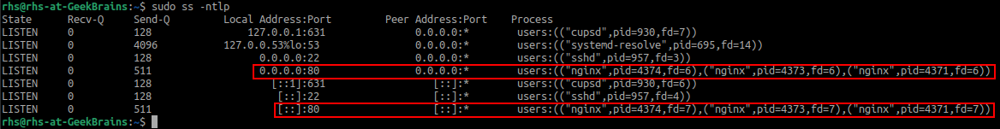
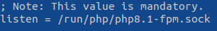
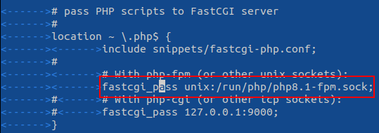
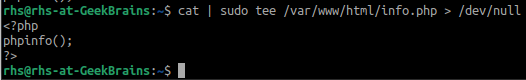
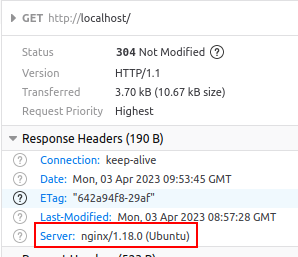
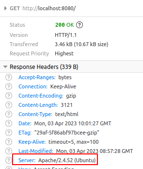
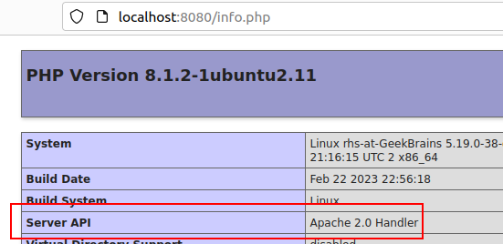
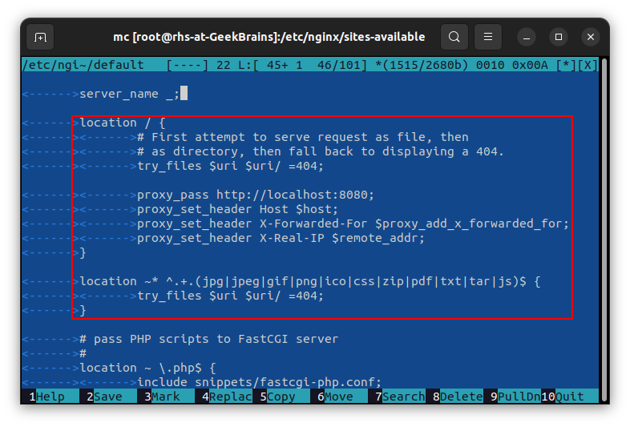
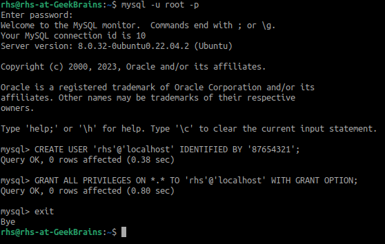
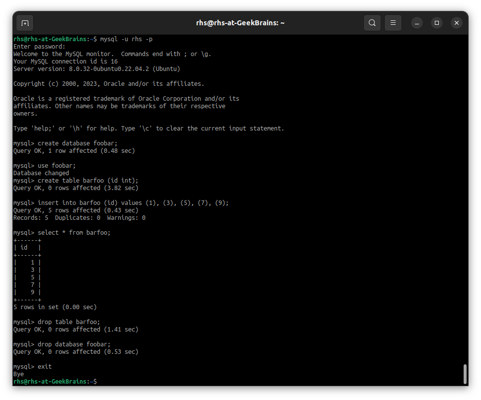

Установить Nginx и настроить его на работу с PHP-FPM.
Устанавливаем Nginx при помощи команды
sudo apt install nginx
Проверяем запустился ли nginx:
systemctl status nginx
Запустился, проверяем слушает ли он порт 80 при помощи команды
Слушает.
Теперь устанавливаем PHP и php-fpm при помощи команды
sudo apt install php php-fpm
Смотрим в файле
/etc/php/8.1/fpm/pool.d/www.conf
какой сокет php-fpm собирается использовать для соединения с веб-сервером:
Редактируем файл
/etc/nginx/sites-available/default
раскомментировав location, относящийся к php и прописав коррректный путь на сокет для php-fpm:
Проверяем конфигурацию nginx при помощи команды
sudo nginx -t
Нам пишется что всё Ok, поэтому перечитываем конфигурацию для nginx при помощи команды
sudo sysinstall reload nginx
Создаём проверочный файл
/var/www/html/info.php
при помощи команды
и пробуем зайти на локальный сайт по URL http://localhost/info.php:
Всё работает!
Установить Apache. Настроить обработку PHP. Добиться одновременной работы с Nginx.
Когда мы устанавливали php в первом задании заодно сам установился и apache как зависимость, так что дополнительно его устанавливать не надо, он уже имеется.
Единственное -- он не запустился по причине того, что не смог подключиться к порту 80, который уже слушает nginx. Поэтому необходимо изменить номер порта в файле
/etc/apache2/ports.conf
и в файле
/etc/apache2/sites-available/000-default.conf
с 80 на какой-нибудь другой номер, чтобы номера портов были не такие, как у уже установленного nginx
и больше не было конфликта. Установим номер порта 8080 в обоих файлах:
и после этого запустим apache при помощи команды
sudo sysinstall restart apache2
Теперь на порту 80 (порт по умолчанию) отвечает nginx:
а на порту 8080 отвечает apache:
PHP дополнительно настраивать не пришлось, все установки по умолчанию заработали для apache сразу же:
Настроить схему обратного прокси для Nginx (динамика - на Apache).
Для того чтобы все запросы, поступающие на порт 80, который слушает nginx, перенаправлялись на apache в файле
/etc/nginx/sites-available
надо отредактировать стейтмент location. А чтобы не все запросы перенаправлялись необходимо добавить ещё один стейтмент location, в котором перечислить те файлы, обращение к которым будет обработано самим nginx:
После этого проверяем конфигурацию nginx при помощи команды
sudo nginx -t
Нам пишется что всё Ok, поэтому перечитываем конфигурацию для nginx при помощи команды
sudo sysinstall reload nginx
и всё, обратный прокси настроен (не знаю какой скриншот тут приложить чтобы доказать это)
Установить MySQL. Создать новую базу данных и таблицу в ней.
Устанавливаем MySQL при помощи команды
sudo apt install mysql-server
Проверяем запустился ли MySQL при помощи команды
systemctl status mysql
Заходим в mysql как root и меняем ему пароль (устанавливаем, по умолчанию root без пароля)
'12345678' с использованием метода аутентификации mysql_native_password:

Так как работать от пользователя root это дурной тон, то создаём отдельного пользователя для MySQL, войдя предварительно как root и используя установленный выше пароль '12345678'. Дадим этому пользователю пароль '87654321' и все возможные права:
Зайдём как пользователь rhs, создадим базу данных foobar, в ней таблицу barfoo с единственным полем типа INT, вставим в эту таблицу 5 произвольных значений, выведем их при помощи команды SELECT, затем удалим таблицу, удалим саму только что созданную базху данных и выйдем из mysql:
